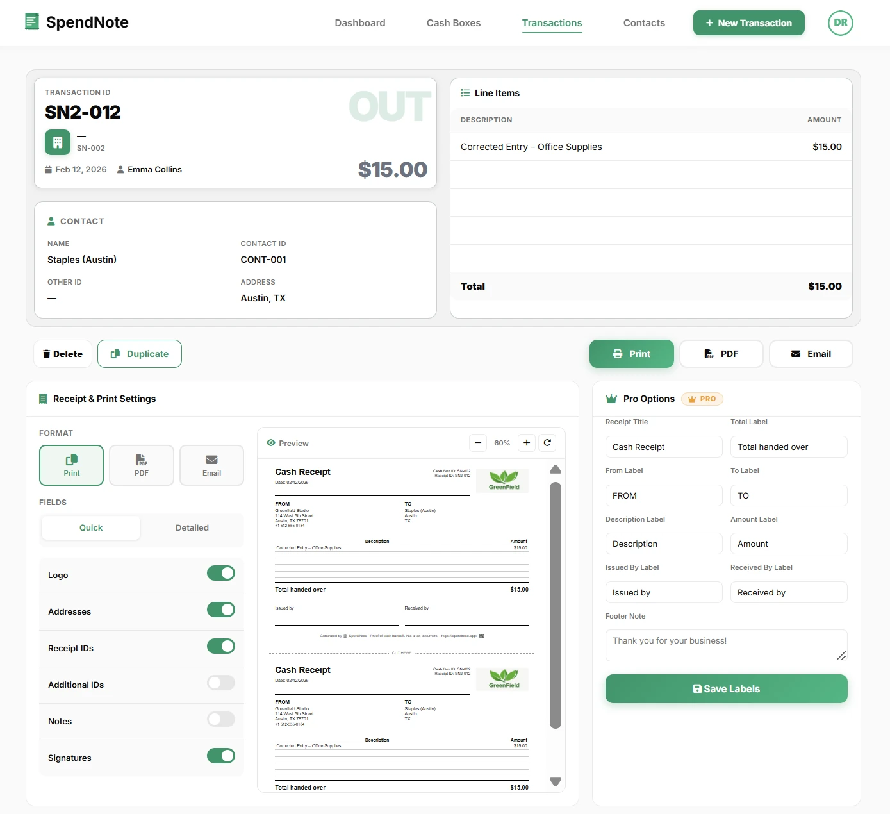

10 practical measures to prevent theft, stop shortages before they start, and keep your petty cash fund safe and accountable.
Secure Your Cash TrackingFree tier available. Paid plans from $19/month. No credit card required.
Petty cash is the easiest money in your business to steal. It is physical, portable, and often poorly tracked. A missing $20 bill does not trigger a bank alert. There is no credit card statement to review. If the controls are weak, small amounts disappear steadily and nobody notices until the fund is hundreds of dollars short.
The good news: petty cash security does not require expensive systems. It requires habits — consistent, non-negotiable habits that make theft difficult and detection immediate.
This sounds obvious, but “I’ll lock it later” is how most shortages begin. The cash box is locked every time the custodian walks away — even for a bathroom break. No exceptions. If the lock is broken or the key is lost, the box is out of service until it is replaced.
Exactly one person controls the petty cash box. They have the only working key. A sealed backup key stays with the owner or manager for emergencies. If two or more people routinely access the box, accountability is impossible — when $30 goes missing, everyone points at everyone else.
Every single disbursement requires documentation before the cash leaves the box. Not after. Not “I’ll bring the receipt tomorrow.” If the recipient cannot produce a receipt, they fill out a voucher slip on the spot. No receipt, no cash.
Physical cash count plus receipts should equal the starting balance. Do this every week at minimum — daily is better. A five-minute count catches problems within hours instead of weeks. See reconciliation guide for the step-by-step process.
Scheduled reconciliations are necessary but predictable. Someone who skims cash learns the schedule and replaces the money before count day. Unannounced spot checks — even once a month — eliminate that loophole. The owner or a second manager should do these, not the custodian.
The more cash in the box, the higher the risk. If your team spends $80 per week, a $200 float is plenty. Keeping $1,000 “just in case” creates temptation and increases your loss if something goes wrong. Review and right-size the float every quarter.
Petty cash is not a personal lending fund. “I’ll put it back Friday” is the start of an unrecoverable shortage. If someone needs an advance, it goes through payroll or management — not through the cash box. Write this into your petty cash policy explicitly.
When the fund is replenished, two people should verify the amount: the custodian and a second person (manager, accountant, or colleague). Both sign off on the count. This dual control prevents disputes and deters manipulation.
Paper logs can be altered, lost, or “accidentally” destroyed. A digital system creates timestamped, immutable records. Every transaction is logged the moment it happens, with the custodian’s identity attached. If something goes missing, the digital trail shows exactly when and where the discrepancy started.

During the day, the box stays with the custodian. At night, it goes into a safe, locked cabinet, or locked office — ideally with a different key than the box itself. Do not leave it on a desk overnight, even in a locked building. Cleaning crews, maintenance workers, and early arrivals all have building access.
SpendNote creates an automatic audit trail for every petty cash transaction. Timestamped receipts, real-time balances, and full history — no paper to forge or lose.
Create Free AccountIf you see any of these, your controls need immediate attention:
When these signs appear, do not wait. Conduct a full reconciliation immediately, review the policy, and reassign the custodian if necessary.
Important: SpendNote is for internal cash tracking and receipt generation. It does not replace your accounting software, insurance, or legal compliance requirements. For suspected fraud or theft, consult your legal advisor.
The clearest sign is a persistent shortage that cannot be explained by receipts. If the cash count is consistently lower than what the log says it should be, someone is taking money without documenting it. Other red flags: missing receipts for round-dollar amounts, the same person always reporting “lost” receipts, and resistance to surprise audits.
At minimum, once a week. Many businesses count daily — it takes less than five minutes and catches problems immediately. The longer you wait between counts, the harder it is to trace a shortage back to a specific transaction or person.
A camera is a deterrent, but it is not a substitute for good controls. Locked storage, a single custodian, mandatory receipts, and regular reconciliation prevent more theft than cameras do. If you add a camera, make sure staff know it is there — the deterrent effect only works if people are aware of it.
In a locked cash box inside a bolted safe or locked cabinet. Do not leave the box on a desk, counter, or in an unlocked drawer overnight. The less cash left in the box over non-business hours, the better — replenish at the start of the next business day instead.